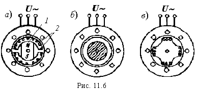

Для создания магнитного поля на роторе размещают постоянные магниты 1, а полости между ними забивают пластмассой
(рис. 11.6,а).

В полюсах магнитов размещают короткозамкнутую пусковую обмотку 2.
Вращающий момент в СМД возникает как результат взаимодействия полюсов вращающегося магнитного поля статора с полюсами намагниченного ротора.
Свойства и рабочие характеристики СМД с постоянным магнитами не отличаются от свойств СД с электромагнитным возбуждением. Основным недостатком СМД с постоянными магнитами является высокая стоимость постоянных магнитов, коэрцитивная сила которых
Hc ≥ 50 кА/м.